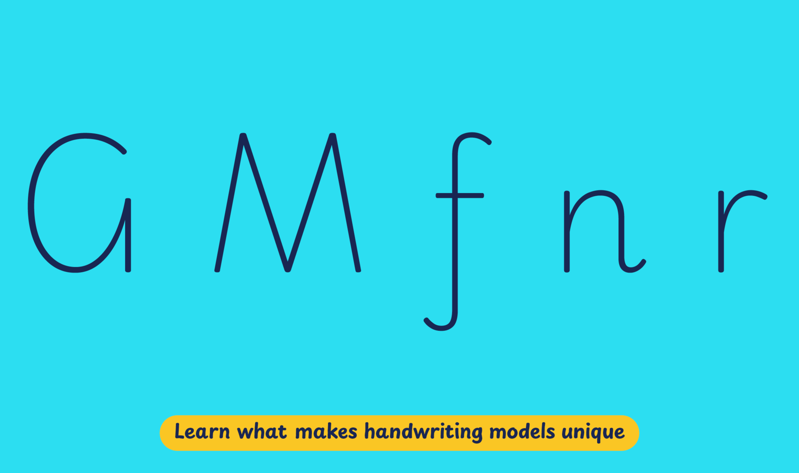

England has been the incubator for several prominent handwriting styles that still influence teaching around the world. One of the earliest examples is the English Roundhand, which was used in business and education in the 19th century.
The implementation of modern cursive styles in classrooms is probably the most influential development for contemporary handwriting education. They draw from the ideas of the Italic Handwriting Revival movement of the early 20th century, and the work of its proponents. Alfred Fairbank (1895–1982) proposed modern italic writing, based on chancery models, as a new approach to teaching handwriting with the aim of simplification and faster writing speed. Recently, it has been one of the most popular approaches to handwriting teaching in England. Of the twenty-three methods described in the National Handwriting Association’s 2013 guide to writing methods for teaching, thirteen were fully joined or semi-joined modern cursive styles. Important among these are Nelson Handwriting, Tom Gourdie Modern Hand, Jarman Handwriting, Marion Richardson, and Sassoon-Williams model.
Playwrite England Joined is a variable font with a weight range from Thin (100) to Regular (400), and supports over 150 Latin-based languages.
To contribute, see github.com/TypeTogether/Playwrite.
This fully connected modern cursive has short, loopless ascenders and looped descenders, and is available in two flavors: upright and slanted (italic). It has simplified print upper cases. The most identifiable features are the open 'G' with no crossbar and the 'M' with splain legs. Lowercase 'f' is its more recognizable feature, with an ascender that requires lifting the pen. As expected in this style, the letters 'r' and 'z' have an italic cursive structure.

Playwrite England Joined appears in font menus with a two-letter country code
‘GB’ and a ‘J’ for the Joined variant, Playwrite GB J. The font
features four styles: Thin, ExtraLight, Light, and Regular.
The download .zip file includes the variable font and standard static ttf fonts
for each style.
The Playwrite school fonts are based on the findings of Primarium, a groundbreaking educational effort that documents the history and current practice of handwriting models taught to primary school students worldwide. This typographic engine serves teachers, educators, and parents by generating localized libre fonts. These Playwrite fonts are complemented by Playpen Sans, an informal and fun typeface designed for annotations, instructions, and student notes – that also includes emojis.
For more information about the Primarium project, visit primarium.info, and to learn more about handwriting education in England, see primarium.info/countries/england.
Windows: Download the font file to your computer. Navigate to where you saved the font file and double-click it to open. Click the "Install" button at the top of the font preview window. The font is now installed and ready to be used across your apps.
macOS: After downloading the font file to your Mac, right-click it in Finder and select "Open With" > "Font Book". Then, click "Install Font" in the font preview window that pops up. The font is now installed and ready to be used across your apps.
The Playwrite font family uses complex OpenType features to generate connected writing. Some common applications require these features to be manually activated.
Google Docs and Slides: From the font selector drop-down, go to "More Fonts" and search for the desired font name, in this case, "Playwrite GB J", and click OK. If some text is already selected, the font choice will apply.
Note: This font family doesn't include Bold style, so please avoid applying it in text editors. If you use the common 'B' button, you will automatically generate a low-quality style.
Microsoft Word: Go to Format in the Menu bar, select Font, and then the Advanced tab. Activate "Contextual Alternates" and "Kerning for fonts below" to apply these settings to all text sizes.
LibreOffice: In macOS, to select the different styles, go to Format in the Menu bar, select Character, and use the Typeface menu.
Adobe InDesign: Open the Paragraph Panel and select Adobe "World-Ready Paragraph Composer" from the contextual menu.
Adobe Illustrator: Navigate to Preferences > Type, check the "Show Indic Options" box, and close preferences. Then open the Paragraph Panel and select "Middle Eastern Composer" from the contextual menu.
Adobe Photoshop: Access the Paragraph Panel, then choose "World-Ready Layout" from the contextual menu.
The above instructions are also available in PDF format here.